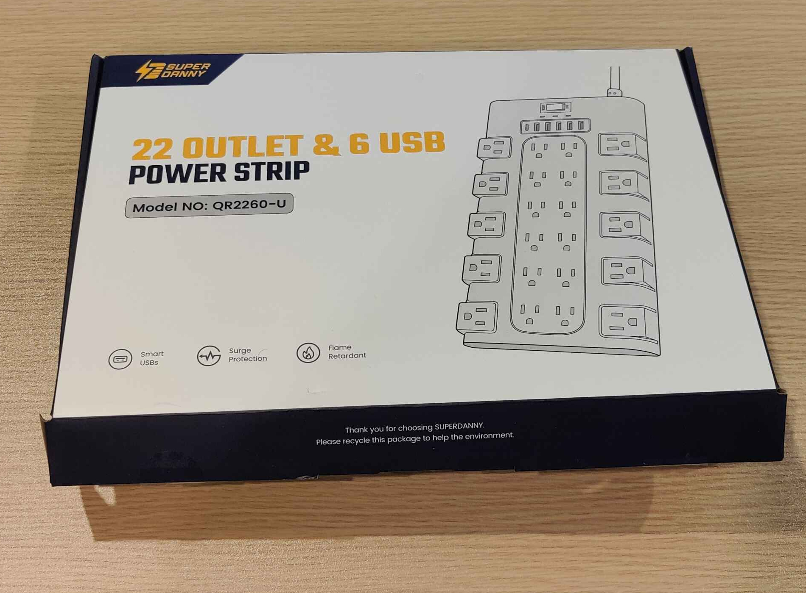

My name is Aary, and I made a website to document my trash for the week, every week. I upload images, histories, and descriptions of my trash every Sunday night for all the world to see. Why? It has to do with the history of trash.
Trash was not necessarily always a part of human life. We grow up in a time of mass-consumerism, where getting a lot of likes on TikTok or Instagram often requires having the newest, coolest, most fashionable stuff. With fast fashion, fast food, and fast fame, we create a lot more waste than societies likely made in the past. We buy new stuff without thinking about its future with us, if it will fit into our lives long-term. We buy it with a narrow outlook.
As such, I started documenting my trash. I started thinking about what I am buying, what I am removing, and what was my history with it. Was it worth it? Did I buy this product years ago and allow it to be a part of my life until it ran out of use? Or did I buy it a week ago before getting tired of it, not understanding the life it could have had if I had acknowledged the depth of importance there is in making a new purchase.
Back To TopThis week on Aary’s Trash, I have much more interesting and varied stuff than normal! I decided that with the start of the new semester of college, it was time to clear out my room and, thus, clear my mind. After getting myself situated with my new classes, I started digging into the deepest crevices of my room to finally get rid of the parasitic products that have latched onto my hoarding tendencies for far too long.
First up are the items that I held onto for too long. The first is a green floss pick, which one could guess is used to floss your teeth. I had a whole bag of these and slowly whittled them down, until I was down to the last few. However, I bought a new bag of a different brand that I was recommended by my girlfriend, and it was much nicer quality in my opinion, so I never felt the need to finish the last few of this brand of floss picks. I also had two little pieces of plastics that are made to aesthetically cover screws in furniture. Specifically, these ones were made for my old desk chair before I replaced it recently. The chair lasted me for years, but the leather was peeling off onto the ground around me and these screw caps would fall out constantly which frustrated me, until I chose to just leave them out and forget about them in a drawer. Finally in this category, I have a box that holds an outlet extender. It has been sitting on a chair in my room for weeks because I did not get around to plugging in the product, and so I never got rid of the trash associated with it. All of this stuff has been cramming my room and my mind for far too long, and it’s time for it to make its exit.
Next up are my broken electronics. One is a red and black gaming mouse with a variety of different buttons. I loved using this mouse, and I spent many years playing Minecraft using it, but eventually no computers would notice its existence regardless of where I plugged it in, and it was time to be replaced. There is also a computer keyboard that I used to make video edits and type into the YouTube search bar to find new videos. It came with a mouse, but the battery within that mouse exploded which made the product unusable, and thus caused the keyboard to be unusable in tandem. Finally, my old webcam. I was fond of making silly videos for YouTube, school assignments, and just for/with my friends. I would use this webcam in such a way, but it started glitching and the video was no longer discernible. I will miss all of these products, but they had full lives and they have since been replaced. I hung onto them out of a belief I could fix or salvage them one day, but it’s time to go.
Finally, I found items that were sentimental to me in some way that I no longer want to hold onto. First up are two books that were a part of the 39 Clues series. I saw that Rick Riordan was an author attached to the project which excited me as a young Percy Jackson fan, so I bought these two. The idea of collectible items in the books and the air of mystery around the entire story were enrapturing, but I never managed to get my hands on any of the other books in the series, and I do not have as much of an interest in doing so any longer. Next are a pair of shoes I owned for a while. I got them cheap and loved them because of their bright blue and green trims, the only interesting pieces in an otherwise drab wardrobe. They are too old for me to wear now, and my wardrobe has gotten an upgrade, but I was scared of letting them go and potentially going back to a world of bad style. Finally, a Marvel's Avengers poster that I was given when I went to see Endgame on release day. I went there at 9am with my parents (who do not understand Marvel at all) and walked out with this memorabilia. It fit on a little, unobtrusive place on my wall so I did not think to remove it, but I no longer have much interest in Marvel and the poster was beginning to fall off, so it seemed like the right time to get rid of it. These items are the scariest to get rid of, because they all had so much impact on my past, but refusing to change and grow is toxic to oneself and it’s time to let these go.
Back To TopA green floss pick
Two small black screw caps for a chair
A box for an outlet extender
A broken red and black mouse
A broken black computer keyboard
A broken webcam
Two books from the 39 Clues series
A pair of blue and green shoes
An Avengers Endgame poster
Back To Top| Item | Weight | Source | Location | Cost | Owned | Mode | Replaced |
|---|---|---|---|---|---|---|---|
| Floss Pick | 2g | Amazon | Bathroom | $ | 1 Year | Trash | Yes |
| Screw Caps | 1g | Staples | Desk Shelf | $ | 7 Years | Trash | No |
| Box | 1lb | Amazon | Bedroom Chair | $ | 1 Month | Recycling | No |
| Mouse | 106g | Amazon | Bed Trunk | $$ | 7 Years | Recycling | Yes |
| Keyboard | 2lbs | Amazon | Bed Trunk | $$$ | 7 Years | Recycling | Yes |
| Webcam | 162g | Amazon | Bed Trunk | $$$ | 5 Years | Recycling | Yes |
| Books | 2.31lbs each | Barnes & Noble | Bed Trunk | $$ | 15 Years | Donate | No |
| Shoes | 2lbs each | Amazon | With Other Shoes | $ | 2 Years | Donate | Yes |
| Poster | 1lb | Regal | Wall | $ | 6 Years | Recycling | No |
My item of the week for this week is my broken gaming mouse. As I grew up, I gained more interest in video games and computers in general, and I started purchasing more electronics including a laptop and laptop accessories. This gaming mouse was cheap and had good reviews, so I bought it with my computer and quickly made use of it to play mostly Minecraft, and to learn new software like Davinci Resolve, and watch content online. I was obsessed with technology and this mouse came with me on my education journey. I remember one day where I was clicking the mouse like crazy because I was so locked into the work I was doing, and my dad got frustrated with me for being so loud and clicking the mouse so much. I was working too fast! One day, the mouse stopped moving on the screen when I would move it in real life, and the laptop stopped making the sound it made when something was plugged into its USB slots. The wire seemed to have broken. I sadly bought a replacement that was almost the exact same as this one, and it has also lasted me for years, until today in fact. It’s sad to part with the mouse, but it’s time to move forward.
Since then, I learned that this mouse has been discontinued by its company. However, I have also learned that many different laptop accessory companies make a mouse that is almost exactly the same as this one. From my perspective, I think the mice companies have developed the best gaming mouse they need for cheap usage. Each company diverges for more expensive mice as they attempt to push the boundaries of the technology, but it seems this one has become a baseline because of how cheap yet effective it is.
 Back To Top
Back To Top
It was a very productive week! I had a great time going through my old stuff and starting to clear up what was truly important to me and what needed to go, but I hope all of my trash continues to contribute to society in some way after it leaves my room. Some of it will be donated, some of it will be recycled into something new, and hopefully only a little of it will help fill up a landfill. Thank you for reading, let me know if you have any thoughts or any stories you would like to share of your own trash for the week, and I hope you’ll join me again next week!
Back To Top